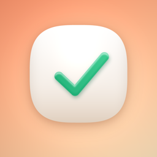

The cutest, comfiest way to get things done. 🍡
Mochi To-Do is a cute checklist app: tap to check things off, dress up your lists with 100 beautiful skins, and tick tasks right from interactive Home & Lock Screen widgets. Reminders, multiple lists, 50 languages, and a one-time unlock — no subscriptions, no account, no tracking.
Touch and hold an empty area of your Home Screen until the apps jiggle, tap the + in the corner, search for Mochi To-Do, choose a size and tap Add Widget. For the Lock Screen, touch and hold the Lock Screen, tap Customize, then add a Mochi widget. You can also open the app and tap the widget guide for an illustrated walkthrough.
Yes. On iOS 17 and later the widget is interactive — tap a circle in the widget to complete a task. It updates instantly and matches your current skin.
Open an item, set a date and time, and optionally choose a daily, weekly or monthly repeat. Mochi will send a friendly notification. Make sure notifications are enabled in Settings → Mochi To-Do → Notifications.
A single purchase unlocks every premium skin forever — no subscription. Already purchased? Open Settings in the app and tap Restore Purchases.
Mochi follows your system language automatically. To pick another, open Settings → Language in the app and choose from 50 languages (the first option follows your system).
Everything stays on your device. Mochi has no account and collects no personal data. See our Privacy Policy.
Need help or have an idea? Email
alice51849@hotmail.com.
We typically reply within 1–2 business days.